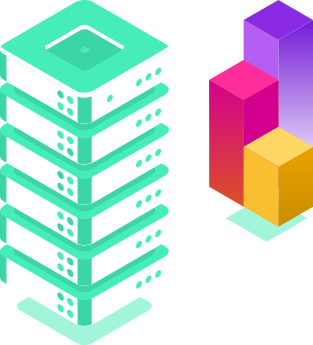
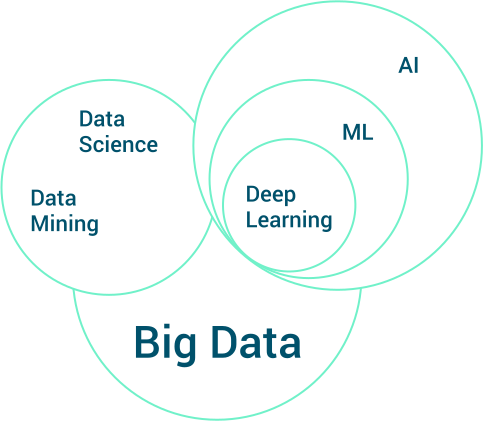
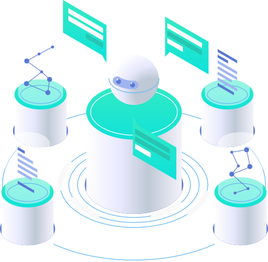
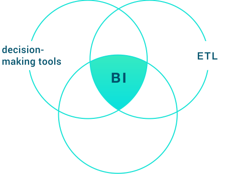

EXEMPLES DE FORFAITS
L’INGÉNIERIE DE DONNÉES
Nos ingénieurs de données visent à trouver des tendances dans les ensembles de données et à développer des algorithmes pour aider à rendre les données brutes plus utiles à l'entreprise. Cela nécessite un ensemble de compétences techniques importantes, y compris une connaissance approfondie de la conception de bases de données SQL et de plusieurs langages de programmation.
Notre objectif est de permettre à une entreprise d'améliorer la façon dont elle gère ses ressources telles que le capital, les personnes et les systèmes d'information pour atteindre ses objectifs commerciaux en appliquant les technologies les plus récentes et à croissance rapide.

Cela implique également une approche architecturale pour la planification, l'analyse, la conception et la mise en œuvre des applications.
L'ingénierie des données est cruciale dans l'intégration d'un ensemble avancé de tâches et de techniques qui améliorent la communication commerciale dans toute l'entreprise, ce qui lui permet de développer des personnes, des procédures et des systèmes à l'échelle mondiale.
DESCRIPTION TECHNIQUE
APPRENTISSAGE AUTOMATIQUE:
- Sickit Learn
- Numpy
- Spark MLLIB/ML
- Implémentation d'algorithmes de régression linéaire/logistique
- Filtrage Сlustering et collaboratif
- L'apprentissage en profondeur
- Applications avec Tensorflow/keras
- Développement de pipelines Apprentissage automatique en Python/Scala ou dans Databricks notebook

Big data
Le Big Data traite des moyens d'analyser, d'extraire et de traiter des ensembles de données trop volumineux ou trop complexes pour être traités par des logiciels d'application de traitement de données traditionnels.


Nous prenons en charge les défis du Big Data tels que:
- capture de données
- stockage de données
- analyse de données
- recherche
- partage
- transfert
- visualisation
- interrogation
- capture des données
- mise à jour
- la source
DESCRIPTION TECHNIQUE
Implémentation de rom scratch de lac de données à l'aide des solutions Hadoop et Hortonworks
Définition des architectures distribuées: Microservices, architecture Lambda/Kappa, Services, Discovery Consul/Zookeeper, gestion des ressources YARN
Développement d'applications (spark/scala) pour l'ingestion et la cartographie de données en temps réel et le traitement de données parallèle / distribué: moteur SPARK et ses API
L'INFORMATIQUE DÉCISIONNELLE
L'informatique décisionnelle (ID) comprend les stratégies et les technologies utilisées pour l'analyse des données des informations commerciales. Les fonctions de l'informatique décisionnelle des technologies de l'informatique décisionnelle incluent le reporting, le traitement analytique en ligne, l'analyse, le développement de tableaux de bord, l'exploration de données, l'exploration de processus, le traitement d'événements complexes, la gestion des performances commerciales, l'analyse comparative, l'exploration de texte, l'analyse prédictive et l'analyse prescriptive.
Les technologies de l’informatique décisionnelle peuvent gérer de grandes quantités de données structurées et parfois non structurées pour aider à identifier, développer et créer de nouvelles opportunités commerciales stratégiques. Les décisions d'exploitation de base incluent le positionnement du produit ou la tarification
Les décisions commerciales stratégiques impliquent des priorités, des objectifs et des orientations au niveau le plus large


L'informatique décisionnelle (ID) comprend les stratégies et les technologies utilisées pour l'analyse des données des informations commerciales. Les fonctions de l'informatique décisionnelle des technologies de l'informatique décisionnelle incluent le reporting, le traitement analytique en ligne, l'analyse, le développement de tableaux de bord, l'exploration de données, l'exploration de processus, le traitement d'événements complexes, la gestion des performances commerciales, l'analyse comparative, l'exploration de texte, l'analyse prédictive et l'analyse prescriptive.
Les technologies de l’informatique décisionnelle peuvent gérer de grandes quantités de données structurées et parfois non structurées pour aider à identifier, développer et créer de nouvelles opportunités commerciales stratégiques.
Les décisions d'exploitation de base incluent le positionnement du produit ou la tarification
Les décisions commerciales stratégiques impliquent des priorités, des objectifs et des orientations au niveau le plus large
DESCRIPTION TECHNIQUE
Decision-making tools
SAP BI 4 - Business Object 5.x, 6.x
BO XIR2, BO XI
Designer
Deski
Supervisor (CMC)
Luira, Infoview
WEBI XI, BCA
Microsoft BI (SSAS, SSIS, SSRS)
ETL
Talend
Informatica
Genio
BODS
Pentaho Multidimensional analysis
MDX
Olap Mondrian
Schema workbench
SSAS
Hyperion